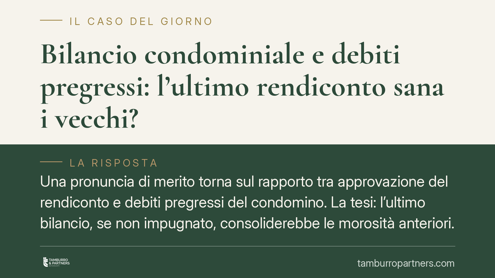

Bilancio condominiale e debiti pregressi: l'ultimo rendiconto sana i vecchi?
Una pronuncia di merito torna sul rapporto tra approvazione del rendiconto e debiti pregressi del condomino. La tesi: l'ultimo bilancio, se non impugnato, consoliderebbe le morosità anteriori. Ma l'orientamento della Cassazione è più cauto e distingue tra inoppugnabilità della delibera e contestabilità del singolo credito in sede di opposizione a decreto ingiuntivo. Vediamo perché la differenza conta.

Il tema
Quando l'assemblea approva il rendiconto annuale, quel bilancio "assorbe" anche le morosità degli anni precedenti? Se il condomino non impugna la delibera nei termini, può poi contestare in giudizio i debiti pregressi?
La questione è tornata all'attenzione grazie a una pronuncia di merito che aderisce a un orientamento favorevole al condominio: in virtù della continuità contabile tra i rendiconti, l'approvazione dell'ultimo bilancio consoliderebbe le poste debitorie riportate dalle gestioni anteriori, rendendole difficilmente contestabili.
*Avvertenza: gli estremi puntuali di singole sentenze di merito circolate sul tema vanno verificati caso per caso presso la fonte ufficiale. Qui interessa il principio, non la massima isolata.*
Inquadramento normativo
Due norme fanno da cornice.
L'art. 1137 c.c. stabilisce che le deliberazioni assembleari sono obbligatorie per tutti i condomini e possono essere impugnate entro 30 giorni (dalla delibera per i presenti dissenzienti o astenuti, dalla comunicazione del verbale per gli assenti). Decorso il termine, la delibera diventa inoppugnabile: non può più essere annullata.
L'art. 63 disp. att. c.c. consente all'amministratore di ottenere un decreto ingiuntivo immediatamente esecutivo in base allo stato di ripartizione approvato dall'assemblea, senza attendere l'esito di un'eventuale opposizione.
La distinzione decisiva
Qui sta il punto che la tesi "consolidante" tende a sovrapporre.
Una cosa è l'inoppugnabilità della delibera ex art. 1137: passati i 30 giorni, non si discute più della validità della decisione assembleare.
Altra cosa è l'incontestabilità del singolo debito. Su questo l'orientamento della Corte di Cassazione è consolidato in senso più garantista per il condomino: la delibera di approvazione del rendiconto non ha valore di riconoscimento di debito idoneo a rendere intangibili le singole poste. In sede di opposizione a decreto ingiuntivo il giudice può sindacare l'esistenza e l'entità del credito, verificando se le somme richieste corrispondano effettivamente a spese dovute.
In altri termini: che l'assemblea abbia approvato il bilancio non impedisce di contestare, nel giudizio di opposizione, che una certa spesa non sia mai stata sostenuta, non spetti al singolo condomino o sia stata calcolata in misura errata.
Un contrasto reale
La pronuncia di merito che valorizza la "continuità contabile" si colloca dunque in tensione con la giurisprudenza di legittimità prevalente. È un orientamento minoritario, non diritto vivente consolidato.
Per il destinatario tipo — il condomino a cui viene contestata una morosità risalente, o l'amministratore che deve recuperarla — questo significa una cosa sola: l'esito dipende dal foro, dalla concreta ricostruzione dei fatti e dalla qualità della documentazione contabile. Non esiste un automatismo per cui "l'ultimo bilancio cancella i dubbi sui precedenti".
Implicazioni pratiche
Per il condomino: la mancata impugnazione della delibera nei 30 giorni non equivale a rinuncia a difendersi sul merito del credito. Ma il margine si restringe se la contabilità è chiara e il debito è documentato negli anni. Meglio non lasciar maturare il termine se si contesta la decisione in sé.
Per l'amministratore: la solidità del recupero non nasce dall'approvazione formale, ma dalla tracciabilità delle singole voci di spesa nel tempo. Un rendiconto ordinato, con riporti verificabili, è la difesa migliore in un'eventuale opposizione.
Cosa fare in concreto
- Verifica i termini: se contesti la validità della delibera, impugna entro 30 giorni ex art. 1137 c.c. Non attendere il decreto ingiuntivo.
- Conserva la documentazione: chiedi e archivia i rendiconti di ogni gestione, i riparti e i verbali. Servono per ricostruire le poste contestate.
- Controlla la regolarità formale: convocazione corretta, ordine del giorno, chiarezza del rendiconto. Vizi qui possono aprire spazi difensivi.
- Se ricevi un decreto ingiuntivo, valuta l'opposizione nei 40 giorni: puoi contestare esistenza ed entità del credito, non solo i vizi del procedimento.
- Amministratori: garantite continuità e leggibilità contabile tra le gestioni; è ciò che regge in giudizio.
Disclaimer
Contributo informativo a cura di Tamburro & Partners - Avv. Giuseppe Tamburro. Non costituisce parere legale.
Ogni condominio ha una storia a sé.
Se gestisci un'amministrazione e vuoi un confronto su una specifica questione condominiale, scrivi allo studio. Ti rispondiamo entro un giorno lavorativo.